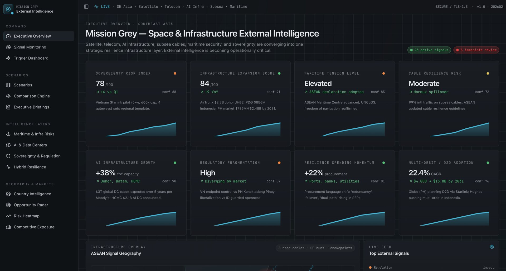
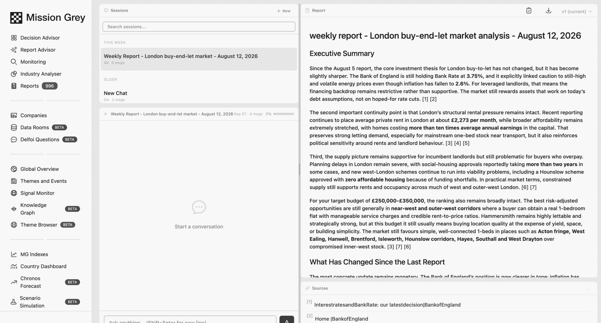

The platform · Access by request
The intelligence layer between the outside world and your decisions.
Mission Grey combines global‑to‑local data, structured knowledge, quantitative and proprietary models, AI and human expertise into continuously updated decision intelligence. This page shows how.
External intelligence
Global to local, macro to micro
External change arrives on four levels.
External intelligence is what sits outside your organization and can still change a decision. One local decision often has to be read through several levels at once.
01Global
02Markets and industries
03Local
04Your organization
One decision
Built from every level that bears on it.
One local investment decision can turn on financing conditions, permits, local politics and the macroeconomic picture behind them. Mission Grey assembles that context around the decision.
Capability walk
Monitor · Analyze · Decide · Act
What the platform does, screen by screen.
Four moments, in the order the work happens: monitor, understand, model, operationalize. One screen each, plus the report the work is circulated as.
01 · MONITOR
What is changing.
Signals collected around the clock: regulation, markets and technology, political developments, supply chains and local conditions, company activity, specialist sources and physical‑world data.

INPUT THE WORLDOUTPUT SIGNAL
02 · ANALYZE
What it means for you.
Mission Grey connects a signal to your exposure: the entities involved, their relationships and history, and the assumptions your organization already holds. The knowledge graph keeps that structure persistent, quantitative models carry the numbers, and Guild experts weigh in where context decides the answer.

INPUT SIGNALOUTPUT ASSESSMENT
03 · DECIDE
What may happen, and what to do.
Multi‑actor simulation sets out what could happen and what you would do about it, run with the actors who would be in the room and tested against the way they behave. Each actor carries the strategic options open to it, primary, alternative and wildcard, with the reasoning under each one.

INPUT ASSESSMENTOUTPUT DECISION
04 · ACT
How intelligence reaches the organization.
Intelligence arrives as reports and executive briefings, dashboards and alerts, role‑ and customer‑specific applications, and agents that route what changed to the person who owns it. Through the API it can flow directly into the views, workflows and systems where decisions are made.
An application built around one customer's decision environment is the operational form of that: the same intelligence layer, shaped around their business.

INPUT DECISIONOUTPUT ACTION
Decide · Act
- Owner
- Action
- Review
Mission Grey can retain the connection between signal, analysis, decision, owner, action and follow‑up.
Decision‑ready analysis that can actually be circulated internally.
A report written in the platform: the thesis under the title, an executive summary, the questions the analysis keeps separate, and numbered sources under the claims that carry them. Versions are kept, so the work can be reopened and taken further.

Rerouting puts two tier‑one suppliers on the same lane risk
Vessel tracking shows sustained diversion on a corridor both suppliers depend on. Cost and delay exposure is concentrated in fourth‑quarter commitments, and the concentration itself is the finding.
Review alternate sourcing before renewal terms close. Reasoning and sources are cited in the full report.
RegulationExport‑control amendment enters comment period; two monitored suppliers fall inside the proposed scope
MarketsSovereign spread movement flagged against one monitored counterparty exposure
An enterprise example
Several developments, one decision.
One illustrative case, run end to end: an industrial manufacturer with a plant in one region, two suppliers in another, and a contract renewal due next quarter.
-
01Developments
An export‑control amendment enters its comment period, a shipping lane the plant depends on reroutes, and an election shifts the outlook for an energy subsidy.
-
02Indicators
Three measures move: delay on the corridor, the share of sourced components inside the proposed control scope, and projected energy cost per unit at the plant.
-
03Scenario
One scenario holds the three together: the control scope is confirmed, the lane stays diverted and the subsidy lapses, with the response already agreed.
-
04Trigger
Defined in advance: two of the three indicators past their thresholds, with the renewal window still open.
-
05Action
Procurement prices the alternate lane, treasury reviews the hedge, compliance opens the control assessment, and management sees one view.
-
06Value
The renewal is decided with the alternative priced and the exposure understood, not after the disruption arrives.
Decision architecture
Five standing objects
A decision, held as a standing structure.
Five connected objects carry a decision over time. Each can change the others, so the system does not go quiet once an answer has been delivered, and all five are drawn again in the full recipe below.
Tracker
What we watch.
Indicator
What we measure.
Scenario
What could happen, and what we would do.
Trigger
When a decision is due.
Action
What the organization does.
SourceSignalExposureIndicatorScenarioTriggerAction
Agents connect intelligence to responsibility and action.
Agents can read trackers, indicators and scenarios continuously, identify material change and know who owns the exposure it touches. They can send that person what changed, recommend an action and, where explicitly authorized, start a process in a connected system.
One external development can mean different instructions for procurement, treasury, compliance and management, not the same alert to everyone.
Check this
Something important changed. A person should look at it.
Do this
An agreed trigger has been reached. A previously defined action is now relevant.
The recipe
Inside the three inputs
The full recipe.
Three inputs, opened up: what each one contributes, the intelligence base that stocks them, and the sources added only when a question calls for them.
AData and context
The Knowledge Graph, entity relationships, history, macro to micro context, and the connections between events, companies, people, markets, regulation and technology.
BModels and methods
LLMs, quantitative and economic models, forecasting, scenario models, fuzzy logic, network approaches, proprietary and university‑developed methods, and agents.
CHuman intelligence
The Mission Grey Guild: domain and regional experts, Delphi methods, structured expert surveys, expert validation and local knowledge.
Intelligence base, underneath all three
+Premium and specialist sources
Detailed maritime data, satellite data, commercial databases, paid research, specialist industry datasets.
+Local and niche sources
Regional sources, specialist publications, local experts, structured local observation.
+Customer‑private data
Internal documents and datasets, assumptions, exposures, plans, organization‑specific context.
Mission Grey decision engine
Decision‑worthy intelligence
Start with the intelligence base. Add what the decision requires.
Method
Data, models and people
AI alone is not enough.
Decision intelligence also needs quantitative models, persistent structure, history, context and expert judgment. Mission Grey combines them because different questions need different forms of analysis, and the question determines the data and the method, not the other way around.
AI assistants help individuals. Mission Grey adds the organizational intelligence layer.
An AI assistant, for one person
- A person
- A question
- An answer
Mission Grey, for the organization
- Persistent intelligence
- Structured knowledge
- Multiple models
- Expert judgment
- Scenarios and indicators
- Decision
- Continuous monitoring
An architectural difference, not a comparison of answers.
Research partnerships
Cambridge Judge Business School · Aalto University · Tampere University
Capability index
The instrument set, one platform
The instrument set.
Thirteen instruments on one platform. They draw on the same intelligence base and evidence, so an answer from one can be checked against another.
Signal monitoring
Track external developments from global to local: regulation, markets, technology, supply chains, physical‑world data.
Trackers and early warning
Watch one issue continuously and catch change while there is still time to act.
Indicators and indexes
Build measures around the decisions you have to make, and hold them to thresholds.
Forecasting Beta
Model how variables and outcomes may develop, with the assumptions set explicitly.
Scenario simulation Beta
Explore possible futures, actor behavior and strategic options before committing to one.
Knowledge Graph Beta
Understand relationships, dependencies and second‑ and third‑order effects across regions and sectors.
Decision Advisor
Investigate one decision on structured intelligence, with prioritized recommended actions.
Report Advisor
Create sourced, recurring reports that state what changed since the last edition.
Industry Analyser
Analyze industries and competitive environments in a repeatable structure, by country and sector.
Expert intelligence Beta
Bring Guild judgment into the analysis through expert review, surveys and Delphi rounds.
Private data rooms Beta
Use your private information as controlled context, which can remain restricted to your environment.
Intelligence applications
Create decision‑ and role‑specific environments on the shared intelligence layer.
Agents and API
Connect intelligence to the people who own a decision and the systems you already run.
Beta marks an instrument the product itself labels beta today.
Trust architecture
Sources, review, private data
What makes it inspectable.
Traceability is a property of the pipeline rather than a promise about it: signal, model, decision and review each leave a record.
Traceable to source
Signals and inputs can be linked back to their source.
Inspectable evidence
The evidence behind a conclusion can be opened and read, not only cited.
Reviewable by experts
Analysis and recommendations can be reviewed and challenged by your own team and by the Guild.
Audit‑ready
A decision, the evidence under it and the trigger that raised it can be documented and justified.
Private data stays private. Customer documents, datasets, assumptions and exposures can be used as controlled context for analysis and can remain restricted to that customer's environment. Customer data is not resold.
Application layer
Above the shared layer
How Mission Grey sits inside an organization.
The shared layer can carry applications, dashboards, agents and API connections built around one organization, an industry or one recurring decision, with the intelligence, models and evidence shared underneath. It is not a separate product built beside the platform.
01Intelligence layer
The shared Mission Grey layer
Global to local data, structured knowledge, quantitative and proprietary models, AI and Guild expertise. One layer, the same for every customer on it.
02Customer context
What makes the layer yours
The organization's own situation, added as controlled context and kept inside its environment.
03Intelligence application
Built around the decisions, on the shared layer
The five standing objects of the decision engine, carried in a view built for one business environment rather than for the platform.
04The roles it serves
One application, the views each function needs
Each row holds more than the items drawn. The layer also runs AI, proprietary methods and forecasting, the context reaches procurement, compliance and treasury, and delivery can be a dashboard, an alert, an agent or an API call into a system you already run.
Independent validation
Rated 5.0 / 5 by users on G2.
From G2 reviews “Not just data, but actually quality reports” “Everything you need at your fingertips” View reviews on G2
Access
Bring us one decision.
A market move. An investment. A supplier exposure. A regulatory change. A strategic assumption you are no longer sure about. We will show what Mission Grey does with it. Mission Grey is an enterprise platform; access is by request.
Request accessFor organizations ready to start working with Mission Grey.
See it on your decisionA short working session using a real question, exposure or opportunity from your organization.